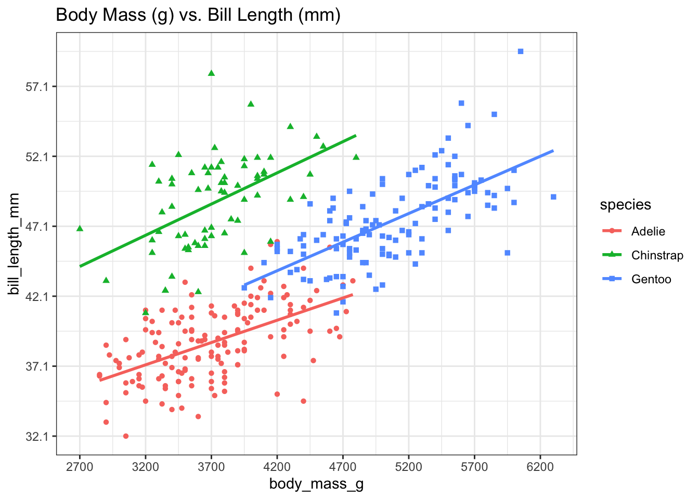

ggplot2 is a way to declaratively create graphics, meaning that you control all aspects of how you want your plot to look. ggplot2 takes in data frames, you provide the aesthetics and the details of what you’d like to see on your plot.
Structure of a ggplot
Data
What information do we want to show from the data collected? Can we determine if there is a connection between two variables?
Anu example: relationship between light recipe and plant weight.
Geometry
What is the best way to communicate what the data is showing us?
Scatter plot? Bar plot? Line plot? Other?
Aesthetics
How do we want the plot to look?
Theme, colors, shapes, error bars.
Build a simple plot - scatter plot
# Install tidyverse package, or alternatively just install ggplot2# install.packages("tidyverse")# Install palmerpenguins to get access to penguins dataset# install.packages("palmerpenguins")# install.packages("shinylive")# Load librarylibrary(ggplot2) library(palmerpenguins)# Load palmer penguins data# data(package = 'palmerpenguins')# Read in your dfdf <- penguins# Aesthetic mappings describe how variables in the data are mapped to visual properties (aesthetics) of geoms. Aesthetic mappings can be set in ggplot() and in individual layers.# Basic plotp_simple <-ggplot(df, aes(x = body_mass_g, y = bill_length_mm, color = species)) +# Include a "+" symbol at the end of each line when adding additional componentsgeom_point()p_simple
How do we build on this?
# Additional features to make the plot look prettier# Change the shapes of the dots of each speciesp <-ggplot(df, aes(x = body_mass_g, y = bill_length_mm, color = species, shape = species)) +geom_point() +# Add trend line, with method = linear regression (lm = linear model)geom_smooth(method = lm, se=FALSE) +# Add a titleggtitle(paste0("Body Mass (g) vs. Bill Length (mm)")) +# Increase the number of x-axis ticksscale_x_continuous(breaks =round(seq(min(df$body_mass_g, na.rm =TRUE), max(df$body_mass_g, na.rm =TRUE), by =500),1)) +# Increase the number of y-axis ticksscale_y_continuous(breaks =round(seq(min(df$bill_length_mm, na.rm =TRUE), max(df$bill_length_mm, na.rm =TRUE), by =5),1)) +# Makes background white, looks a little cleanertheme_bw()p

Other ways to visualize this data
# Facet data by speciesfacet_plot <- p +# Facet data based on penguin species# Scales options are: "fixed", "free", "free_x", "free_y" - fixed = defaultfacet_wrap(facets = df$species, scales ="fixed") +# Format the text at the bottom of the plots so that it's at a 45 degree angletheme(axis.text.x =element_text(angle =45, vjust =1, hjust =1))facet_plot
Other plot types
Bar plot
# Want to plot average size of each variety of penguin in a specific year - bar plotlibrary(Rmisc) library(magrittr)library(ggplot2)# Need to summarize datasumm_data <-summarySE(data = df, measurevar ="body_mass_g", groupvars =c("species", "year", "sex"))# Filter data to only include data from 2007 for female penguinsfiltered_data <- summ_data %>% dplyr::filter(year =="2007"& sex =="female")ggplot(filtered_data, aes(x = species, y= body_mass_g, fill = species)) +geom_bar(stat="identity", color="black", position=position_dodge(), size =0.5, width =0.5) +# Add error barsgeom_errorbar(aes(ymin=body_mass_g - se, ymax=body_mass_g + se), width=.1) +theme_bw()
# geom_bar() notes# Stat = identity tells R to use the provided y values directly, instead of doing other statistics# position = position_dodge() adjusts the placement of the bars on a bar plot# Specify size and width of the bars in the bar plot# geom_errorbar() notes# calculate ymin and ymax# position_dodge() - same as geom_bar# set width of error bars